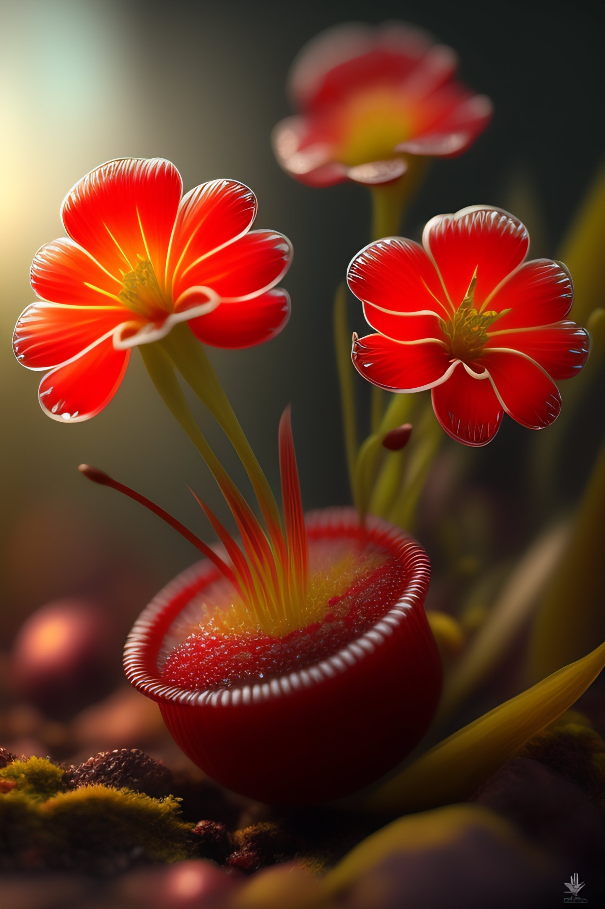
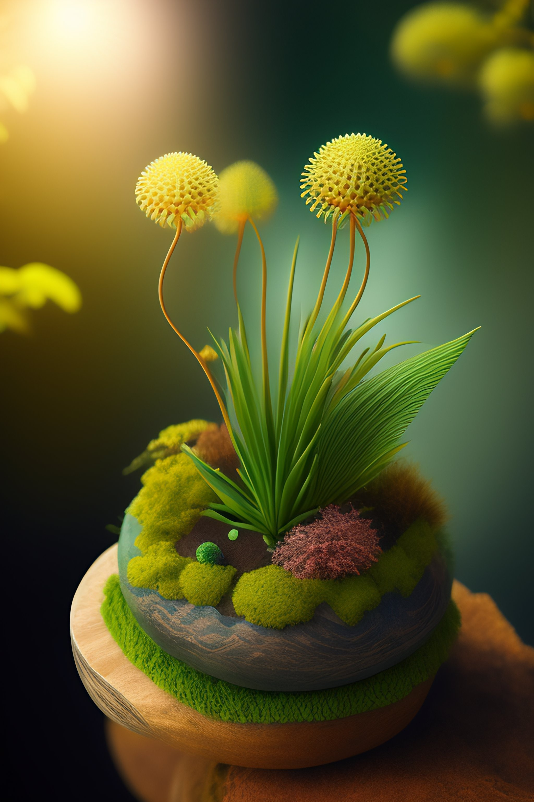
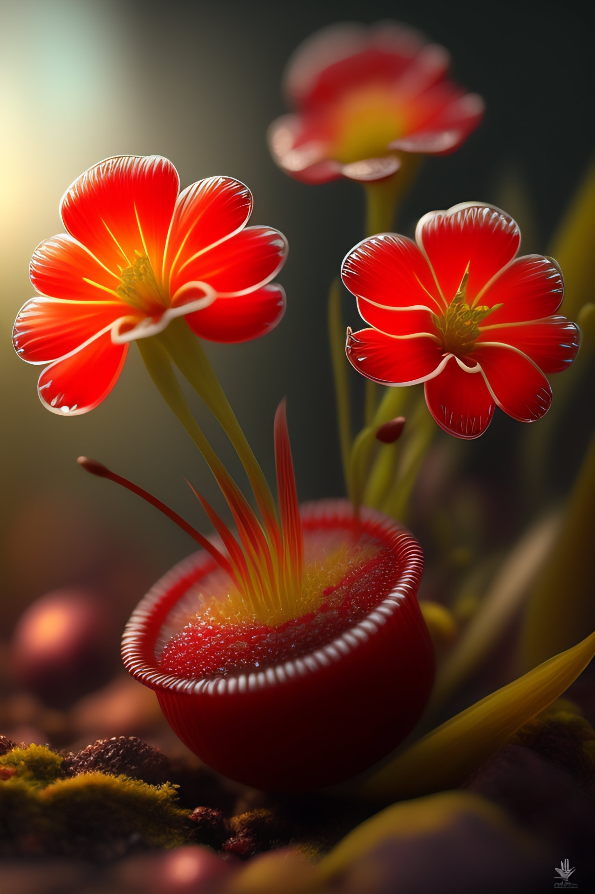
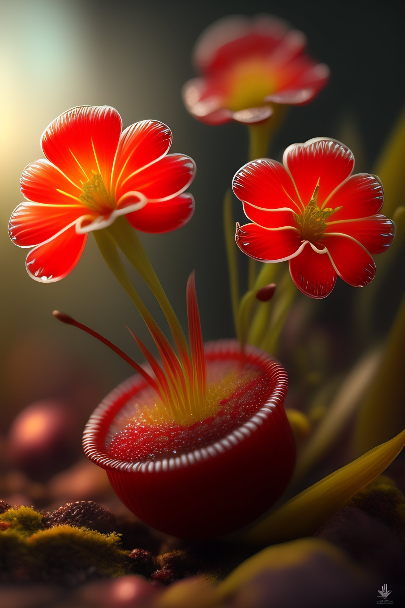
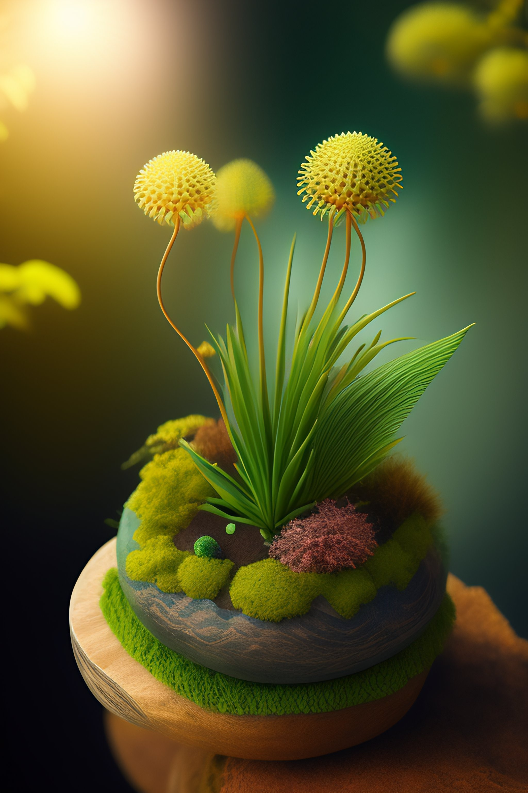
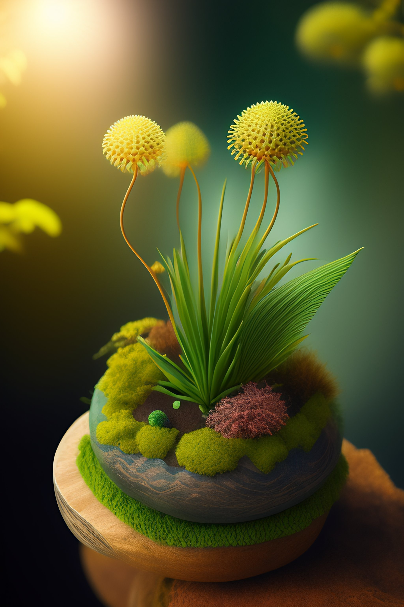

Explora la increíble diversidad de vida en el exoplaneta Turquesa. Sumérgete en las profundidades del océano y descubre cangrejos con luz fosforescente y peces con varias bocas, adaptaciones únicas que les permiten sobrevivir en su entorno acuático. Maravíllate con las medusas bioluminiscentes que iluminan el agua con destellos brillantes y coloridos.
Además, en las vastas extensiones del océano, encontrarás ballenas gigantes, majestuosas criaturas que dominan el paisaje marino con su imponente presencia. En tierra firme, reptiles blancos con plumas se camuflan en los paisajes nevados, mostrando una adaptación sorprendente a su entorno.
La vida en Turquesa ha evolucionado y se ha adaptado de maneras fascinantes. Cada especie tiene características únicas que les permiten sobrevivir y prosperar en este mundo alienígena. Este exoplaneta nos recuerda la diversidad y la belleza del mundo natural, y nos invita a reflexionar sobre la capacidad de la vida para adaptarse a diferentes entornos.
Sumérgete en un viaje emocionante a través de la fauna acuática y terrestre de Turqueza.
Lunas de Turquesa
Lyra: Esfera plateada que ilumina Alcyon. Sus fases lunares marcan el ritmo de las olas, desatando un frenesí de espuma y fuerza en su fase llena.
Alcyon: Esfera esmeralda envuelta en misterio. Su influencia sutil pero poderosa crea olas suaves y soñadoras en su fase creciente, y vibrantes y llenas de vida en su fase llena.
Cygnus: Joya celestial que se alinea con Lyra en el "Eclipse del Triángulo". Desata olas indomables y poderosas, golpeando las costas con fuerza ensordecedora durante el fenómeno.
Flora
En el mágico entorno del Planeta Turquesa, la flora se despliega en una sinfonía de color y movimiento. Las algas marinas flotan suavemente en las aguas turquesas, aportando vida y vitalidad al ecosistema acuático. Las lianas salvajes se entrelazan en los bosques, creando un intrincado laberinto verde que invita a la exploración. Pero es en el reino de las flores en movimiento donde la verdadera maravilla se despliega. Estas flores danzan en armonía con la brisa, sus pétalos vibrantes y delicados creando un espectáculo visual y olfativo cautivador. En el Planeta Turquesa, la flora es un testimonio de la belleza y la vitalidad de la naturaleza, sumergiendo a los visitantes en un mundo de fascinación y asombro.


Fauna
Planeta Turquesa, un lugar asombroso donde la vida marina y terrestre te cautivará. Explora las aguas turquesas y admira el brillo de los cangrejos fosforescentes. Observa los peces con varias bocas alimentándose de diferentes presas. Contempla el espectáculo hipnótico de las medusas bioluminiscentes. Maravíllate con la presencia majestuosa de las ballenas gigantes. Descubre cómo los reptiles de color blanco y con plumas se camuflan en entornos nevados. En el Planeta Turquesa, la diversidad y la belleza de la vida te esperan.
Cenotes
Los cenotes en el Planeta Turquesa son un tesoro natural de belleza y misterio. Estas maravillas subterráneas ofrecen un oasis de aguas cristalinas y refrescantes. Los cangrejos fosforescentes iluminan con su brillo el oscuro mundo subterráneo, mientras que los peces con varias bocas encuentran en estos cenotes un hábitat único para alimentarse. Las medusas bioluminiscentes crean un espectáculo mágico en las aguas cenagosas, y las majestuosas ballenas gigantes nadan por los túneles acuáticos. Explora la fascinante fauna de los cenotes del Planeta Turquesa y descubre un mundo subterráneo lleno de vida y maravillas.
Vida Marina
La Vida marina del Planeta Turquesa es un despliegue de maravillas acuáticas. Desde los cangrejos fosforescentes que iluminan el oscuro paisaje marino, hasta los peces con varias bocas que sorprenden con su habilidad para cazar. Las medusas bioluminiscentes crean un espectáculo hipnótico, mientras que las ballenas gigantes dominan majestuosamente el océano. Sumérgete en este mundo acuático y maravíllate con la diversidad y la belleza de la fauna marina del Planeta Turquesa
Maqueta
Para realizar la maqueta, se esculpieron planetas y lunas con plastoformo, se pintaron con colores, se fijaron cables para simular las órbitas y se espolvoreó glitter para el efecto de brillo. Los planetas y las lunas se colocaron en la posición correcta, creando un sistema solar en miniatura visualmente atractivo y educativo.

 

 



.jpeg)

.jpeg)